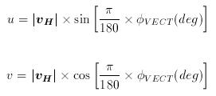
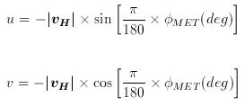
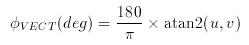
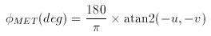
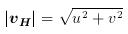

The wind vector can be expressed either in terms of orthogonal veocity components, where:
or as a wind speed, i.e. | vH |, and direction. Particular care should be taken when dealing with the direction since two opposite conventions are commonly used:
These directions are typically expressed in units of degrees, φ(deg), but can either be in the interval -180° to +180° or 0° to 360°. The wind vector azimuth and meteorological convention direction are related by:
subtracting 360° where appropriate in order to keep the values within the desired range. Note that when writing a computer program to convert between speed/direction and orthogonal component conventions, the use of trigonometric functions assumes that angles are expressed in units of radians, φ(rad), rather than degrees (pocket calculators can typically perform trigonometric functions on angles expressed in either units). Directions are converted from units of degrees to radians through the relationship:
Moreover, the familiar expressions relating the x component of a vector to the cosine of its angle and the y component to its sine imply use of:
When converting back from orthogonal components to speed and direction, the atan2(y,x) function should be used in order to avoid ambiguity in the returned value of the wind vector polar angle. The expressions below can be used to convert horizontal wind vector information directly between the orthogonal component and speed/direction conventions without the need for first converting directions between wind the vector polar angle and the wind vector azimuth or meteorological wind direction.
| Wind Vector Azimuth | Meteorological Wind Direction |
|  |  |
|  |  |
|  | |